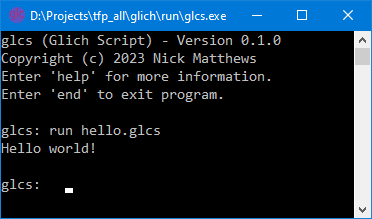

Glich Script – Core Language
Although it is designed to be extended, Glich is perfectly usable in its base form. A particular feature is its ability to perform integer set operations and to handle infinite integer ranges.
Hello script
The simplest possible script just writes a short message to the terminal:
| Hello Script |
|---|
| // Hello world script. write "Hello world!" nl; |

Save this as hello.glcs and run it with the interactive terminal
(for example, glcs hello.glcs). Scripts must use the
.glcs extension and are always encoded as UTF‑8.
The interactive terminal will display the script output and any error messages. A typical session looks like this:
Statements
A Glich script is composed entirely of statements. Every statement follows the same simple rule:
- It begins with a statement name, or with a predefined variable name for assignments.
- It may contain further sub‑statements inside a
{ ... }block. - It always ends with a semicolon
;.
There are no exceptions to this rule – all script structure is built from statements.
| Example | Result |
|---|---|
| for i in 1..5 { write i,; }; | 1, 2, 3, 4, 5, |
Comments and white space
Comments and white space are treated equally and are only required when needed to separate tokens.
//starts a single‑line comment, which runs to the end of the line./* ... */starts a multi‑line comment, which may span several lines.
Multi‑line comments cannot be nested. Comments and white space may appear anywhere in a script; they do not affect execution.
Tokens
Glich scripts are built from tokens. Tokens fall into three groups:
- Operators – symbols and reserved words that perform actions.
- Literals – fixed values such as numbers, text strings, and objects.
- Names – identifiers used for variables, functions, and objects.
Operators
Operators include punctuation symbols (such as +, -, ..)
and reserved words (such as and, or, not).
They are defined in detail in the Operators section of the manual.
Literals
Literal tokens represent fixed values. Core Glich supports:
- numeric literals (Numbers, Fields, Floats),
- text string literals,
- object literals.
Note that ranges and rlists are not literals.
For example, 1 | 5..8 consists of three literal numbers and two operators.
Glich will print such values in the same operator‑based form.
These are described fully on the Value Types page.
Names
Names are used for variables, functions, and objects. A name:
- consists of letters, digits, underscore (
_) and colon (:), - must not start with a digit,
- must not be a reserved word.
The colon (:) is a normal name character, just like underscore.
This is important because names such as abc:def or :root
are valid and commonly used. It is easy to overlook this rule.
Names are case‑sensitive. The detailed rules for names and objects are covered in later sections of the manual.
Next steps
The next page describes the eleven value types in detail, including type groups
(such as set_type for Field, Range, and Rlist) and the automatic type
conversions used by Glich.